Skylineでは、イオントラップやQ-TOFといったフルスキャンでの質量分析計からの生のデータファイルから、クロマトグラフィーにもとづく、定量を実施するための複数メソッドをサポートできるようになりました。これまでのトリプル四重極質量分析計でのSelecte Reaction Monitoring（SRM、選択反応モニタリング）におけるサポートと同様に、Skylineでは、AB SCIEX、Agilent、Thermo-Scientific、およびWatersの質量分析計ベンダー4社の装置において、引き続き、これらの新たな分析メソッドについてもサポートしていきますし、さらに、BrukerのQ-TOF装置も加わえ、これらの高分解能および低分解能の質量分析装置にしても柔軟にサポートしています。
このチュートリアルでは、Skylineを使用してターゲットMS/MSデータを分析する方法を学びます。これは、Parallel Reaction Monitoring（PRM、並列反応モニタリング）として知られており、pseudo-SRMおよびMRM-HR™とも呼ばれている方法です。これらの別名により示唆される通り、ターゲットMS/MSはトリプル四重極質量分析計におけるSRMと非常によく似たフルスキャン測定によるメソッドです。
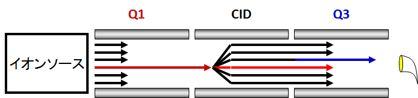
SRMがプリカーサーイオンとプロダクトイオンの複数のペアに対し、スキャンすることで、それぞれのトランジッションにおける強度を経時的に収集していくように、ターゲットMS/MSはプリカーサーイオンのリストに基づくスキャンで、それぞれのプリカーサーイオンのに対するフルMS/MSスキャンのデータを収集していきます。
Skylineにより、この分析法で取得された生のスキャンデータから、各々のクロマトグラムが抽出されます。
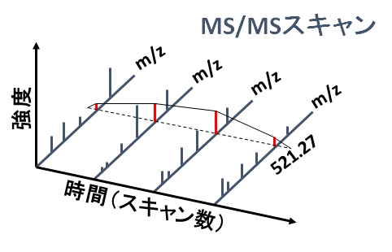
その結果、抽出されたクロマトグラムにより、これまでに慣れ親しんできたSkylineのユーザーインターフェイス内で、トリプル四重極質量分析計でのSRMデータのような定量的データが得られます。
トリプル四重極質量分析計を使用できない場合の手段として、このターゲットMS/MSはその代わりとして使用することが可能です。一方で、高分解能MS/MSでのフィルタリングは、従来のSRMよりも、選択性に優れている場合があり、収集されたスキャンデータから統合されたクロマトグラムのピークを確認することでペプチド検索結果の検証にも役立てることが可能です。また、ターゲットMS/MSは、広くフルスキャン型の装置のデータ確認に使用することができますし、Data Dependent Acquisition（DDA）でのペプチド-スペクトルマッチングによるペプチド同定のパイプラインの結果の確認（Quality Control）にも利用することも可能です。しかし、このQuality Controlアプローチについては個別のチュートリアルで説明いたします。このチュートリアルでは、低分解能Thermo LTQおよび高分解能Agilent Q-TOFでのターゲット定量的測定のための、ターゲットMS/MSの利用について見ていきます。
チュートリアルを始める前に、次のzipファイルをダウンロードしてください。
https://skyline.gs.washington.edu/tutorials/TargetedMSMS_2.zip
この中のファイルを、次のようにコンピュータ上のフォルダで解凍します。
C:\Users\brendanx\Documents
これにより次の新しいフォルダが作成されます。
C:\Users\brendanx\Documents\TargetedMSMS
このチュートリアルには、必要なすべてのファイルが含まれています。WindowsのExplorer内で新らたに作成された、「TargetedMSMS」フォルダから、その中の「Low Res」というサブフォルダに移動します。低分解能のThermo LTQでのターゲットMS/MSデータの分析のチュートリアルで使用するSkylineプロジェクトを開くには、「BSA_Protea_label_free_meth3.sky」ファイルをダブルクリックします。
Skylineのドキュメント内の一つ目のペプチドを選択します。Skylineでは、以下のようになっているはずです。
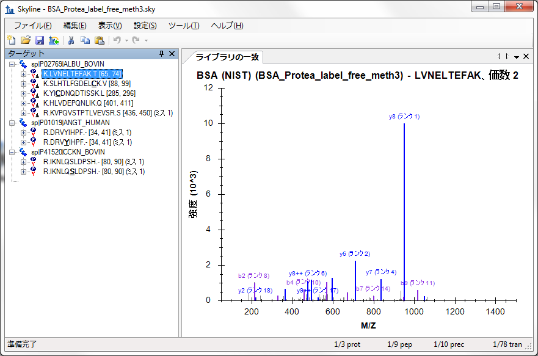
これは比較的小さなドキュメントです。合計78のプロダクトイオンまたはトランジションのターゲットを有する10個のペプチドのプリカーサーが含まれていることが、ステータスバーの右下のインジケーターに示されています。これらの複数のプリカーサーは、NISTより公開されているライブラリのウシ血清アルブミン（BSA）のMS/MSライブラリスペクトルと関連付けられたものと、MS/MSライブラリスペクトルを有しない非修飾とリン酸化修飾を受けたヒトとウシのペプチドがそれぞれ表示されています。
Skyline内で、このようなのSkylineドキュメントを作成することに慣れていない場合には、Skylineのメソッド編集機能などの数々の入門チュートリアルおよび取扱説明ビデオが別に準備されています。このチュートリアルでは、ターゲットプロテオミクスメソッドのメソッドの編集方法としてSkylineに慣れていることを前提として、既存のSkylineドキュメントから始めていきたいと思います。
Windows Explorerを利用すると、このSkylineドキュメントの中の同一の「Low Res」フォルダ内に、2つのThermoのRawファイルを見つけることができると思います。これらのファイルには、下記のメソッドにより上述のターゲットMS/MSのアプローチで、低分解能のLTQの装置により取得されたMS1およびMS/MSスキャンのデータが含まれています。
Skylineでは、このようなターゲットMS/MSのメソッドを、Thermo-Scientific、Bruker Daltonik、およびAB SCIEXの装置用にエクスポートすることが可能です。Agilentの装置およびThermo Q Exactiveについては、Isolatiion Listと呼ばれるものをエクスポートすることが可能であり、Watersについては、現在準備中です。フルスキャン装置用のメソッドをエクスポートする前には、フルスキャンデータの分析用のドキュメントをあらかじめ設定しておく必要があります。
現在のSkylineドキュメントをこのチュートリアルで準備されているThermoのRawファイルの分析用に設定するには、以下の手順を実行します。
このドキュメントは、まだフルスキャンデータからのクロマトグラム抽出向けに設定されていません。SRMデータについては問題なく分析できますが、フルスキャンデータのファイルをインポートするには、一部変更が必要になります。[フルスキャン] タブは以下のようになっています。
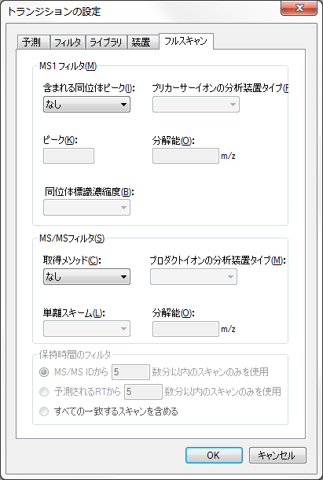
フルスキャンデータからクロマトグラムを抽出するには、Skylineに、さらに情報を入力する必要があります。
[フルスキャンタブ] タブは次のようになっています。
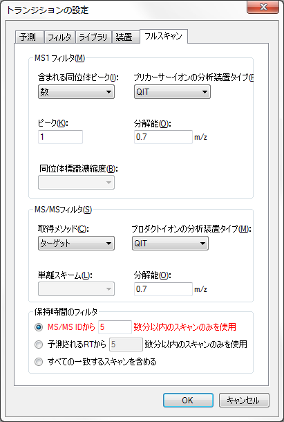
“数”分以内
“数”分以内
注: MS1とMS/MSフィルタの両方が有効化されている場合、すべてのプリカーサーイオンのマスクロマトグラムがMS1スキャンから抽出され、すべてのフラグメントイオンのマスクロマトグラムがMS/MSスキャンから抽出されます。MS/MSスキャン内でプリカーサーイオンがどのように表示されるかを見るには、MS1フィルタが無効であるドキュメントを使用しなければなりません。Skylineはデフォルトの設定では、 [保持時間フィルタ] の設定が [MS/MS IDの5分以内のスキャンのみを使用] となっていますが、この設定は赤でハイライト表示されています。赤字のテキストにマウスカーソルを持ってくると、ヒント「このドキュメントのスペクトルライブラリに、ドキュメント内のペプチドの保持時間情報がありません。」と表示されます。この設定はクロマトグラムを抽出する時間範囲を狭めることを意味していますが、MS/MS IDの検索結果の情報が十分ではない場合には、Skylineによる全グラジエントマスクロマトグラムの抽出が必要です、との警告が継続して出されます。しかし今回のチュートリアルでは、ターゲットMS/MSスキャンから検索されたペプチドのデータをインポートします。以下を行うことで、マスクロマトグラムの抽出範囲をもう少し絞ります。
これにより、Skylineのファイルサイズを大幅に削減し、インポート時間を高速化することでマスクロマトグラムのピークの選択の時間を改善できます。
MS/MSライブラリスペクトルにおけるマッチングがSkylineより抽出されるクロマトグラムに正しく反映されるようにするには、フルスキャン設定のMS/MS分解能とライブラリイオン比較時の許容誤差を合わせる必要があります。このデータセットについては、以下の手順を実行します。
[ライブラリ] タブは次のようになっています。

ここで、ライブラリイオンをマッチさせるウィンドウはクロマトグラム抽出ウィンドウと同じになります。 この設定に関しては、高分解能データの取扱いにおいては、やや複雑になる可能性があります。なぜなら、クロマトグラムを抽出するウィンドウはm/zにより異なるからです。今後、チェックボックスを追加してこれら2つの設定を強制的に合わせていくことを検討中ですが、現時点では通常0.05～0.01の間の値が高分解能データに最も適しています（MS/MS質量分析装置の分解能設定により異なります）。
MS1フルスキャンの設定は、測定結果ファイルのMS1スキャンデータからモノアイソトピックのプリカーサーイオンのピークを抽出してきますので、Skylineドキュメント内にそのプリカーサーイオンのトランジションが含まれているか確認する必要があります。以下の手順でこれを確認することが可能です。
[フィルタ] タブは次のようになっています。
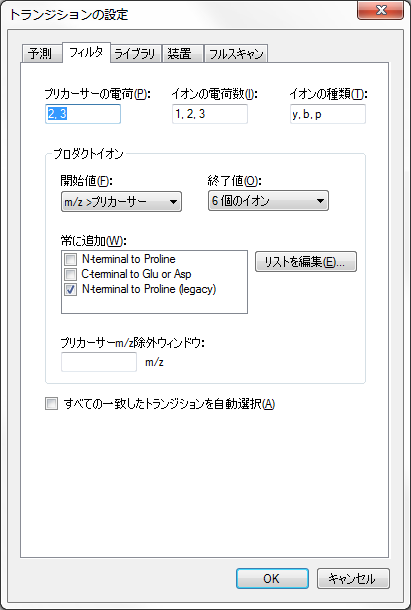
各ペプチドプリカーサーアイテムにプリカーサートランジションが含まれていることを確認するには、以下のことを行います。
残念ながら、このドキュメント内ではすべてのプリカーサーが手動で編集されていますので、 [フィルタ] タブでの変更に対応してトランジショントランジションを変更することができません。そこで、以下のように、プリカーサートランジションを手動で追加する必要があります。
フォームは以下のように見えるはずです。
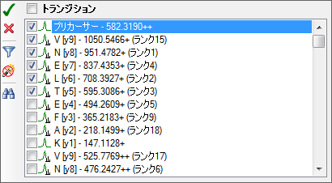
ドキュメント内のその他の9つのプリカーサーそれぞれについても、この手順を繰り返します。これらの変更が完了したら、最初のペプチドを再度選択します。
これでドキュメントは、フルスキャンターゲットMS/MSデータで作業できるよう設定されました。また、これで、LTQ装置のターゲットMS/MSメソッドのとして、エクスポートできます。
メソッドのエクスポートは、そのメソッドを使用する装置制御用コンピュータ上で、Skylineドキュメントから行うのが一番です。なぜなら、ほとんどの装置ベンダーはメソッド編集ソフトウェアの設計にあたり、その他の設定環境内での動作は考慮されていないからです。Skylineでは、これらのベンダーのライブラリを使用して、用意されたテンプレートメソッドに必要な変更を行わなければなりません。一部のケースにおいては、ベンダーのソフトウェアを別のパソコン上に設定して、装置制御PC上の環境を模倣させることも可能ですが、これは推奨されません。Skylineドキュメントを別のパソコン上で編集し、その後で、メソッドエクスポートのために装置制御用コンピュータにSkylineドキュメントを移した方が良いです。
したがって、現在のドキュメント用にThermo LTQメソッドをエクスポートするには、まずThermo LTQ向けの装置制御コンピュータ へとドキュメントを移し、その後以下の手順を実行します。
[メソッドをエクスポート] フォームは以下のように見えるはずです。
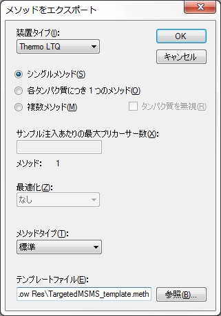
実際にこの手順をThermo LTQ上で行った場合、この操作により、新たに指定した「TargetedMSMS_BSA_Protea.meth」ファイルが作成されます。当該ファイルをダブルクリックすると、その後、LTQの装置設定ソフトウェアに以下のような画面が表示されます。

または、Skylineに以下のエラーメッセージが表示されます。
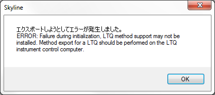
[OK] ボタンをクリックしてこのチュートリアル継続しますが、類似の手順はThermo LTQ、Bruker TOFおよびAB SCIEX TOFの装置制御用コンピュータ上でも活用でき、将来的にはAgilentおよびWaters TOFの装置制御用コンピュータでもできるようになる予定です。または、ファイル > エクスポート > Agilent TOFおよびThermo Q Exactive装置のIsolation Listからも行うことができます。
このように数の少ないドキュメントにおいては、ドキュメント内の特定のプリカーサーのm/zについてMS1スキャンを1つおよびMS/MSスキャンを10設定する必要があるのみでしたので、上記のようなメソッドは手動で作成してください。この目的のためプリカーサーm/z値を含むレポートを生成するには、以下の手順を実行します。
[レポートを編集] フォームは以下のように見えるはずです。
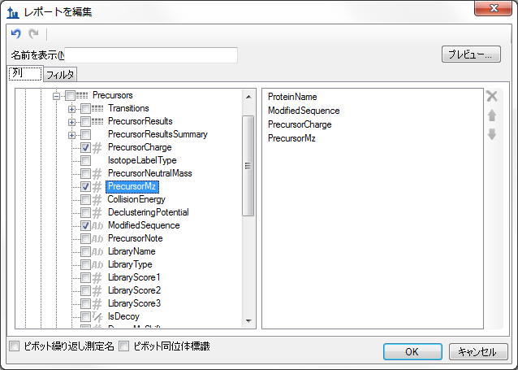
[レポートをプレビュー] フォームは以下のように見えるはずです。
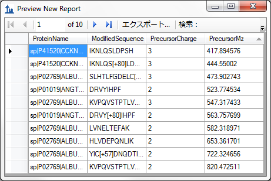
このフォームにはプリカーサーm/z値が表示されていますので、現在直接メソッドエクスポートをサポートしていない装置であっても、このドキュメントのターゲットMS/MSメソッドの設定に時間はかからないはずです。実際のところ、今回のチュートリアルで実施しているデータの元のメソッドはこの方法で作成しました。注: SRMのように、ターゲットMS/MS（またはPRM）実験がスケジュールによるデータの取得に高く依存するようになると、スケジュール化するためのアルゴリズムが非常に重要となります。
Thermo LTQ上で収集したペプチド検索結果と2つの生データのファイルの両方をこのドキュメント用にインポートするには、以下の手順を実行します。
Skylineに以下のようなウィザードフォームが表示されます。
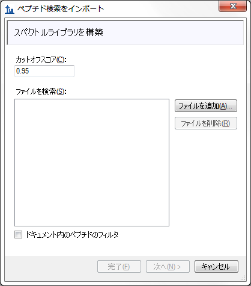
このフォームの最初のページは、Skylineドキュメントのスペクトル ライブラリの構築に使用可能です。これを行うには、以下の手順を実行します。
フォームは以下のように見えるはずです。
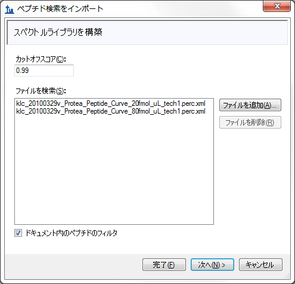
Skylineが、ターゲットMS/MSのデータで実行されたSequest/Percolatorペプチド検索の結果からスペクトルライブラリを構築し始め、これを行いながら進行状況フォームを表示します。Skylineはこの手順を完了すると、ペプチド検索スペクトルソースファイルまたはSkylineドキュメントに生データのファイルがないか検索します。このケースでは、一致するThermoのRawファイルが2つ見つかります。一致するデータファイルが見つからなかった場合、それらを探すよう指示が出ます。
ウィザードフォームは以下のように見え、クロマトグラム抽出のためにSkylineが使用するファイルが表示されているはずです。
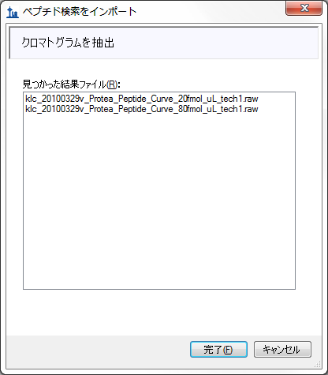
このウィザードには、MS1フルスキャンフィルタチュートリアルで表示されているように、その他の手順が含まれる場合があります。しかし、ドキュメントには、すでにペプチド修飾およびフルスキャンの設定が含まれており、ドキュメントに一致するもののフィルタペプチドIDのみを選択すること可能であるため、Skyline上ではクロマトグラムの抽出作業以外に何もすることはありません。。
ファイルのインポートが開始され、Skylineウィンドウおよび [クロマトグラムの読み込み中] フォームの下部にあるステータスバーに進行状況が表示されます。
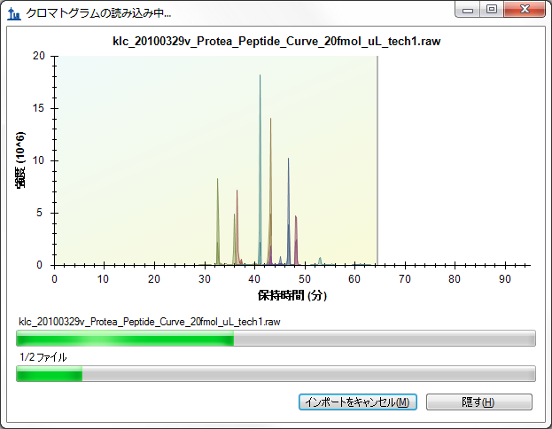
ターゲットクロマトグラムが抽出されピークが分析されている間に、以下の作業で抽出されたクロマトグラムを表示するための準備することできます。
インポートが完了すると、Skylineウィンドウは以下のように見えるはずです。
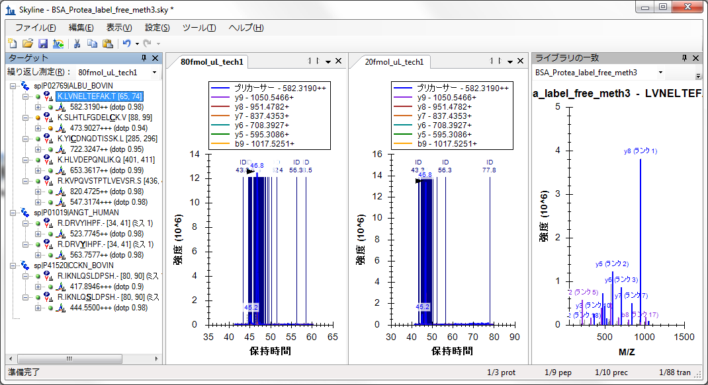
この表示でクロマトグラムを確認するのは、スペクトルIDが多数あるため、やや困難である可能性があります。これらには、青い垂直ライン、「ID」の文字および同定されたスペクトルの分単位での時間が注釈付けられています。選択したクロマトグラムピークが、その頂点を示す黒の矢印ポインタ付きで、これらのIDの真ん中に現れます。
選択したペプチドのそれぞれのクロマトグラムのピーク強度（1.4 x 107）が、4:1で希釈した割に似ているということに気付かれるかもしれません。これは、ドキュメント内のその他の2つのタンパク質の希釈において、BSAペプチドを同一のバックグラウンドとして使用したからです。
このフルクロマトグラムビューがSkylineで表示されている場合、以下を行ってクロマトグラムの積分ピークへとズームインします。
クロマトグラムグラフは以下のように見えるはずです。
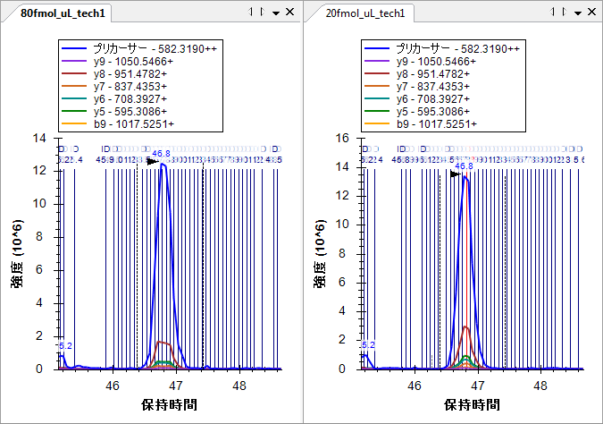
ここでは、ターゲットペプチドとして同定されたスペクトルが個別のラインとしてラインが表示されます。よく見てみると、20fmolサンプルのクロマトグラムピークの真ん中に赤いラインが見られます。これは、現在 [ライブラリの一致] ビューに表示されているスペクトルであり、BiblioSpecライブラリ構築ツールが「最良スペクトル」として選択したものです。クロマトグラムプロット内のラインをクリックするか、[ライブラリの一致] ビューで上部のドロップダウンリストをクリックして、リストを選択することで、その他のスペクトルも見ることができますペプチド検索エンジンが、クロマトグラムのピークからこの多量に存在するペプチドを含むスペクトルとして同定が可能であるということは、多少驚きに値するかもしれません。ピーク積分の境界付近のスペクトルを見てみると、シグナルノイズ比が非常に低いということが分かります。

検索に関しては、3つのタンパク質とUniprotのFASTAファイルを逆配列化したものに対し、実施しています。
また、ペプチドIDの注釈が多すぎるとクロマトグラムグラフを確認しづらいかもしれませんので、以下を行います。
[ターゲット] ビューに注目してみると、すべてのターゲットペプチドを確認できます。これでMS/MSスペクトルが一致し、小さなスペクトル付きのアイコンが下に表示されます。最低ドット積スコア（「dotp」と標識）は、0.84であることが分かります。これにより、プリカーサー「417.8946+++（dotp 0.84）の、測定済みのプロダクトイオンピーク面積とライブラリスペクトル内の断片イオン強度との間の相関度スコアが提供されます。[ターゲット] ビューには有効な繰り返し測定、すなわち「20fmol_ul_tech1」のドット積スコアのみが表示されています。タブテキストが太字であり、[ターゲット] ビュー上部のドロップリスト内で選択されているため、有効な繰り返し測定であることが分かります。「80fmol_ul_tech1」繰り返し測定のドット積スコアを見るには、そのクロマトグラムグラフをクリックするか、ドロップリスト内で当該測定を選択してください。
すべての繰り返し測定について同時にこの情報を再確認するには、以下を行います。
[ピーク面積] グラフは以下のように見えるはずです。
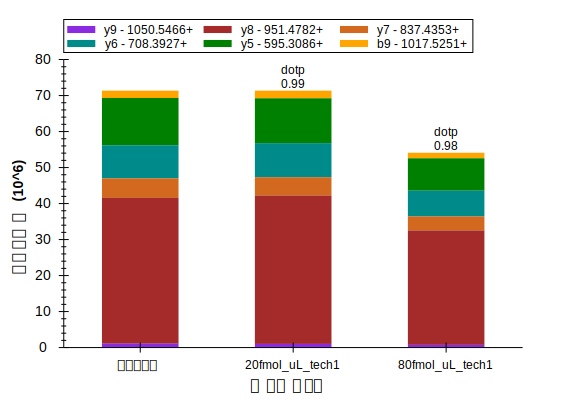
そのように見えない場合は、以下の手順を実行する必要があります。
これらの設定を有するすべてのターゲットペプチドを再確認して、すべてが検索スペクトルに良好に一致していること、およびBSAペプチドの濃度がこれらのサンプル内で比較的安定していることを確認可能です。BSAペプチドの一部は20 fmolサンプルでより高いピーク面積を示しており、また一部は80 fmolサンプルでより高くなっていますが、これは単に測定値のばらつきによるものです。全5ポイントにおける希釈曲線については、上記LVNELTEFAKペプチドのピーク面積グラフは以下のようになります。
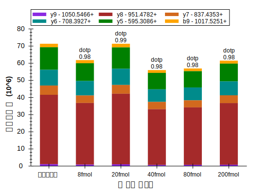
次に、ヒューマンのペプチドDRVYIHPFに注目してみましょう。ここでは、サンプル名80 fmolおよび20 fmolにより示唆されるように4:1の濃度比が見られると予測されます。Skylineが実際に行った測定値の詳細を見るには、以下を行います。
[ピーク面積] グラフは以下のように見えるはずです。
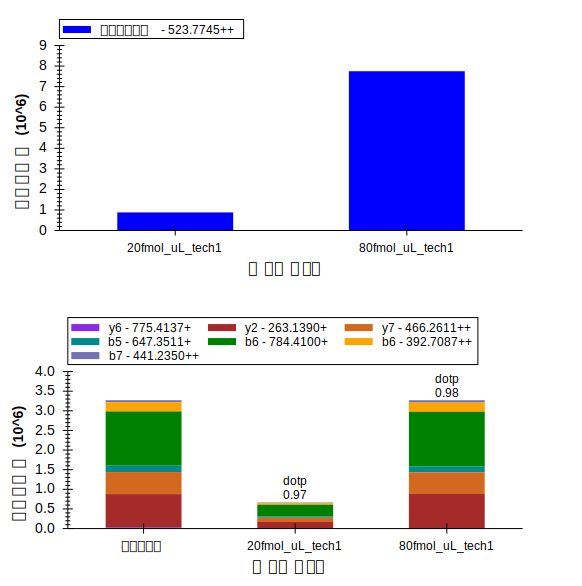
80 fmolプロダクトイオンは合計約3 x 106、および20 fmol プロダクトイオンは合計約0.7 x 106となります。これは予測された4:1の比率からかけ離れているというわけではないのですが、MS1スキャンから抽出されたプリカーサーイオンについては、80 fmol面積は約6 x 106および20 fmol面積はほぼ4 x 106、または3:2の比率です。クロマトグラムグラフに注目して、この相違の原因を解釈してみます。
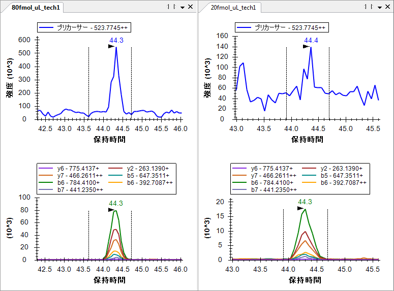
20 fmol繰り返し測定内のピーク積分境界をプロダクトイオンクロマトグラムグラフ内のピークへとリセットする場合、下部グラフペインのx-軸の下をクリック・ドラッグします。プロダクトイオンのピーク面積はあまり変更されませんが、プリカーサーのピーク面積は約0.8 x 106にまで落ち込みます。または、80 fmolピーク面積の¼にかなり近くなります。プロダクトイオンクロマトグラムのノイズは、MS1から抽出したクロマトグラムと比較してかなり少ないということは、ここでも注目に値します。MS/MSからのプロダクトイオンクロマトグラムは、同一分解能のMS1からのプリカーサークロマトグラムよりも選択的です。
ここで、ドキュメント内の最後の4つのペプチドをすべて再確認すると、すべての4つのペプチドのフォームに、80 fmolサンプルと20 fmolサンプルとの間の強度比として、順に、予測通り約4:1が表示されていることも確認できます。（このデータは希釈シリーズから2ポイントを選んだものです。このチュートリアルではサイズを考慮して、2ポイントのみで行っています。）
低分解能LTQは、MS/MSスキャン1から抽出されたフラグメントイオンクロマトグラムを使用した定量実験を行うにあたり、十分な装置であることが、このデータおよびその他の実験で示されています。
また以下を行って、繰り返し測定の間の相対イオン存在量が比較可能です。
このモードでは、ドキュメント内のすべてのペプチドをもう一度再確認して、断片イオンの相対存在量が繰り返し測定間で非常に似ていること、およびライブラリスペクトル断片強度に非常に似ていることを確認可能です。
R.IKNLQSLDPSH.- [80, 90] K.HLVDEPQNLIK.Q [401, 411]
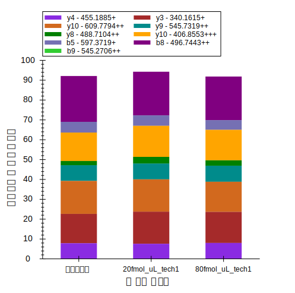 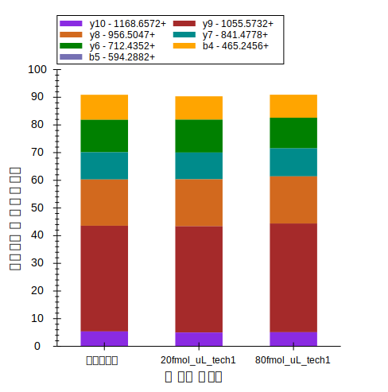
このチュートリアルに含まれているその他のデータセットは、BSA消化上で実行されAgilent 6500 Series Q-TOFで測定された全希釈シリーズです。このデータをこのチュートリアルでダウンロードできる小さいサイズに収めるため、高分解能スキャン内のすべてのピークをセントロイド化しました。しかしながら、Skylineフルスキャンフィルタは、プロファイルスキャンでも同じように良好に動作します。
このQ-TOFデータで作業を開始するには、作業を行っているファイルを保存して、作成済みのチュートリアルフォルダの「TOF」サブフォルダの中の「BSA_Agilent.sky」ファイルを開きます。
繰り返しになりますが、これは「TOF」フォルダ内の生データファイルにより測定された実験の全Skylineドキュメントです。しかし現在、その設定ではSRMデータのインポートのみが許可されている設定です。この時点で、このチュートリアルに含まれているフルスキャンデータファイルをインポートしようとすると、以下のエラーメッセージが表示されます。
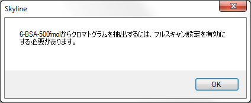
実際にこれを行う場合、元に戻す（ctrl+Z）を利用してドキュメントを元の状況に戻します。
以下を行って、ドキュメント設定を調整し、チュートリアルデータファイルに取り込まれたターゲットMS/MS実験と互換性を持たせることが可能です。
[フルスキャンタブ] タブは次のようになっています。

Default
このデータセットには、インポートすべきペプチド検索結果はありません。データインポート前にペプチドが溶出する保持時間を予測する方法もありません。設定をこのままにしておくと、Skylineは全グラジエントクロマトグラムを抽出します。なぜなら、MS/MS IDの情報が欠けているからです。以下を行うこともできます。
また、Skylineにこのオプションが赤で表示され、マウスカーソルを赤いテキストの上にホバリングさせると、ヒント「全グラジエントクロマトグラムはインポートには時間がかかり、ディスク容量を消費するうえ、ピークの選択が効果的にできない可能性があります。」が現れます。しかし、他に選択肢はない状況ですので、この設定を単一のファイルに対してのみ使用します。
またこのデータセットにはMS1スキャンも含まれていますが、ここでもプリカーサートランジションがドキュメント内に含まれています。プリカーサートランジションを追加するには、
[フィルタ] タブは次のようになっています。
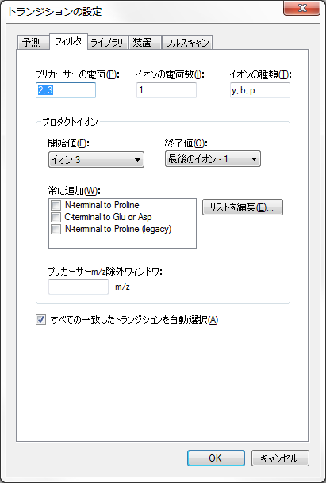
各ペプチドプリカーサーアイテムにプリカーサートランジションが含まれているよう徹底させるには、以下を行います。
この場合、すべてのペプチドに3つのプリカーサートランジション（M、M+1、およびM+2）が含まれているのが見られます。これは、高分解能MS1スキャンでのみ可能です。これは以下のように見えるはずです。
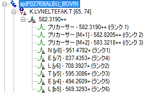
トランジションが自動的に追加されます。なぜならどのペプチドも手動で編集されておらず、自動選択モードのままになっているからです。
また、SkylineがOrthigonalランキングを利用して、プリカーサー同位体ピーク（iランク）およびプロダクトイオンピーク（ランク）をランク付けしているのが見られます。プリカーサー同位体ピークは、予測同位体分布に従いランク付けされます。一方プロダクトイオンピークは、一致するライブラリスペクトルにおける相対強度により個別にランク付けされます。
希釈シリーズでの最高濃度の実行をドキュメントにインポートするには、以下の手順を実行します。
ターゲットクロマトグラムが抽出されピークが分析されている間に、以下を行って抽出されたクロマトグラムを表示する準備を整えることができます。
インポートが完了すると、Skylineウィンドウは以下のように見えるはずです。
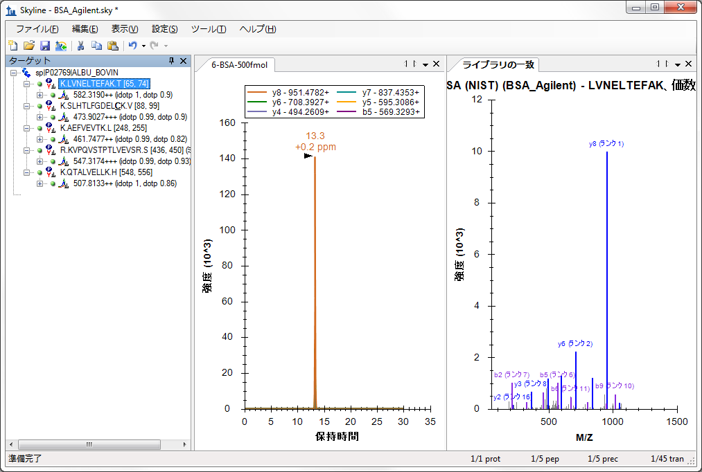
まず、クロマトグラムグラフ内のクロマトグラムが30分勾配全体を覆っているのにお気づきになると思います。
[ターゲット] ビューにズームインすると、新たに2つのOrthogonalドット積値である、idotpおよびdotpが、プリカーサー同位体分布およびプロダクトイオン強度に追加されているのが見られます。この一番濃い濃度のデータについては、クロマトグラムピークと予測相対強度との間の非常に良好な相関度が、これらの値により示されています。
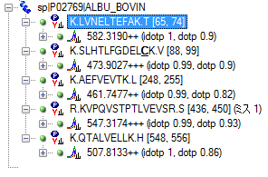
その他の5つの濃度ポイントの全グラジエントクロマトグラムのインポートを回避するには、以下を行います。
[ペプチド設定] フォームは以下のように見えるはずです。
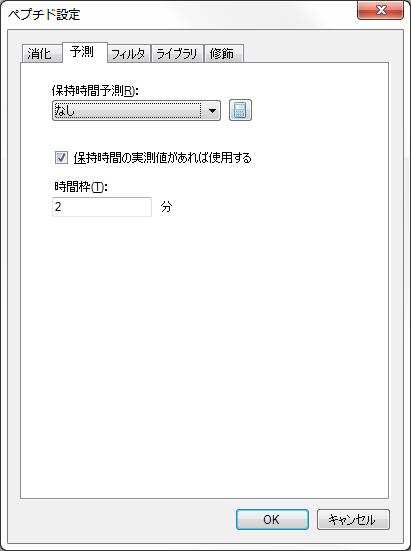
[トランジション設定] の画面は次のようになります。
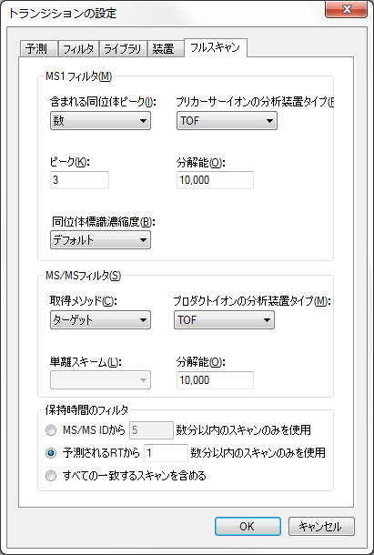
このデータセットから残りの生データファイルをインポートするには、以下の手順を実行します。
データがインポートされたら、またはインポート中に、以下を行ってクロマトグラムグラフを配置します。
クロマトグラムグラフは以下のように見えるはずです。
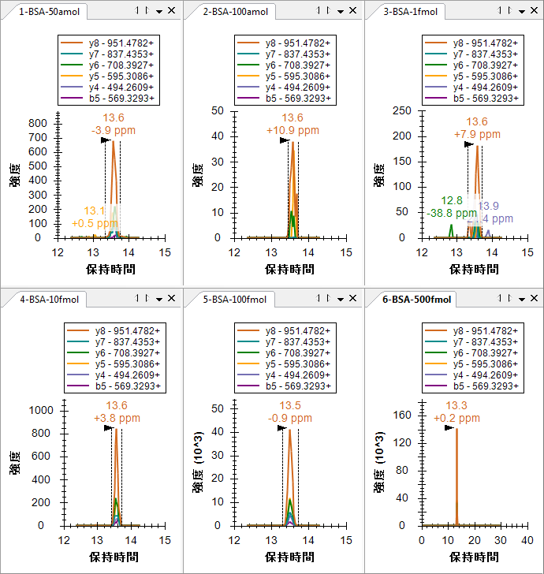
新しくインポートしたクロマトグラムの長さはわずか2分ですが、6-BSA-500fmolクロマトグラムの長さは30分のままであるのが分かります。すべてグラフ上で選択したピークにズームインするには、以下を行います。
これにより、クロマトグラムは以下のようになります。
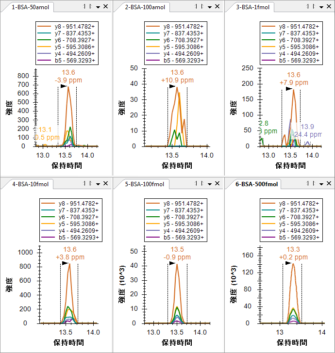6つのクロマトグラムグラフから分かることとして、100 amolサンプル（40）より50 amolサンプルの方が、強度が高く（700）ピークグループの形状が優れていることが挙げられます。すべてのピークの保持時間は非常に似通っており、Skylineが100 amolサンプルで誤ったピークを選択したいう可能性は低くなります。また高分解能データについては、ピーク保持時間の注釈の下に質量誤差値がSkylineで表示され、予測m/z値とピーク内のポイントの加重平均との間の偏差が示されます。上図には、高強度のデータは低強度のデータより正確となる傾向があるという全般的なトレンドがかなりはっきりと示されており、これはノイズにより生じる強度比の変動が原因であると思われます。
50 amolサンプルの強度の問題についてより深い洞察を得るには、以下を行います。
これにより [ピーク面積] グラフは以下のように見えるはずです。

このビューでは50 amolサンプルが、100 amolサンプルより10 fmolサンプルの方に、より近く一致していることが示されています。4つのその他のペプチドを再確認すると、2つ（SLHTLFGDELCKおよびKVPQVSTPTLVEVSR）において、50 amolサンプルの総ピークが実際に10 fmolサンプルより強度が高く、その他の2つについてはピークが小さいことが分かります。 明らかに、このサンプルの濃度は実際には50 amolではありません。反応が10 fmolと100 fmolとの間であった2つのペプチドの事例から、実際の濃度はこれらの濃度の間のいずれかの値であったと思われますが、その他の3つのペプチドによりそのケースが弱まっています。
また、サンプルが数値プリフィックス（1, 2, 3 … 6）で示される次数（順番）で実際に測定されたかどうかのチェックも、行う価値があります。これを達成するには、以下を行います。
グラフに変化は見られません。すなわち、サンプルは示されている次数で実際に取得されたということです。このような反応曲線は通常、最低濃度から最高濃度へと取得され、キャリーオーバーの影響を削減します。
Skylineを利用して、濃度曲線データの品質についての洞察を非常に素早く得ることができます。
最後の検証手順として、MS1フィルタプリカーサーピークも同様であるかどうかを見てみましょう。MS1ピークを閲覧するには、以下を行います。
クロマトグラムグラフは以下のように見えるはずです。
K.LVNELTEFAK.T (500 fmol)
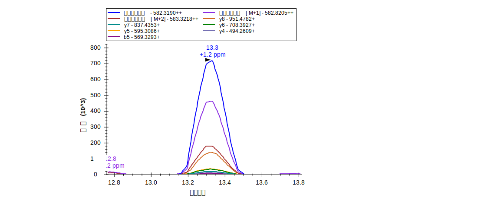
これまでのように、最高強度のプロダクトイオン（y8）はモノアイソトピックプリカーサーの強度の約1/5（1.4 x 105 v.7.2 x 105）に達しており、M+2ピークでさえもy8ピークより強度が高くなっています。
プリカーサーピークのみを見るには、以下を行います。
これによりSkylineは以下のように見えるはずです。

[ピーク面積] グラフは以下のように見えるはずです。
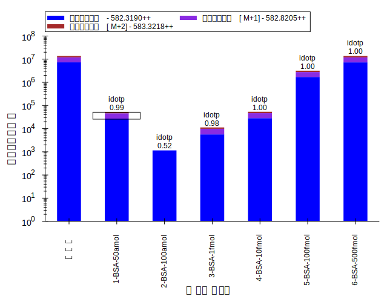
5つのペプチドをそれぞれもう一度確認すると、濃度ポイントの相対強度はプロダクトイオン比較で見たものと非常に似通っていることが分かります。
このチュートリアルでは、ターゲットMS/MS実験実行用にSkylineドキュメントを設定する方法を学びました。これによりSRM様の実験を、イオントラップおよびQ-TOF装置といったフルスキャン装置上で実行できるようになります。また通常のシステム適合性、品質管理、診断の各試験向けに、フルスキャン装置上でこの技術を利用することが可能です。ターゲットMS/MSメソッドをエクスポートする方法（現在ThermoおよびAB SCIEXについては準備中、スケジュール化されたメソッドには非対応）、およびSkylineレポートを使用して、メソッドエクスポートを現在サポートしていない装置のターゲットプリカーサーm/z値のリストを得る方法について学びました。また、測定結果のデータファイルをインポートする方法、およびこれらのファイルに含まれるMS1スキャンからクロマトグラムを抽出する方法についても学びました。インポートが完了すると、含まれるMS1スキャンのirankやidotpといった新しい注釈が見られるようになり、MS1スキャンまたはMS/MSスキャンいずれかの情報のみを表示するよう選択可能です。または、それ以外のSkylineによる、クロマトグラム、グラフ、レポートの詳細については、トリプル四重極でのSRM実験またはチュートリアルを参考にしてください。
1. Stacy D. Sherrod et al. Label-Free Quantitation of Protein Modifications by Pseudo-Selected Reaction Monitoring with Internal Reference Peptides. J. Proteome Res. (submitted)
2. Schilling, B. et al. Platform Independent and Label-Free Quantitation of Proteomic Data Using MS1 Extracted Ion Chromatograms in Skyline. Application to Protein Acetylation and Phosphorylation. Mol Cell Proteomics (2012).doi:10.1074/mcp.M112.017707